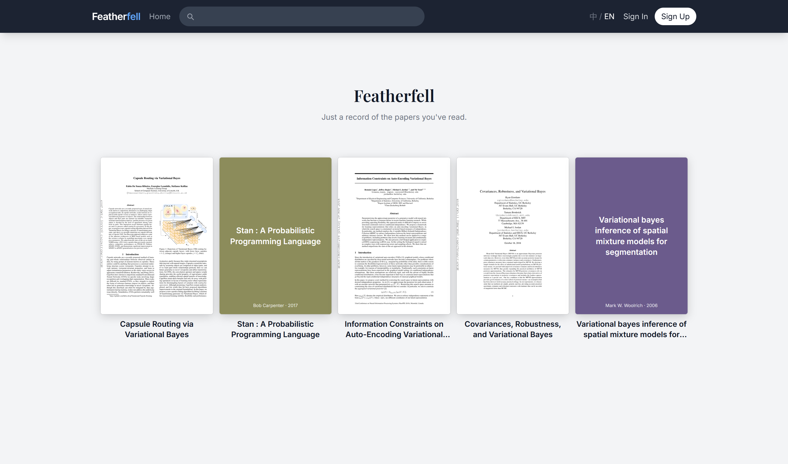
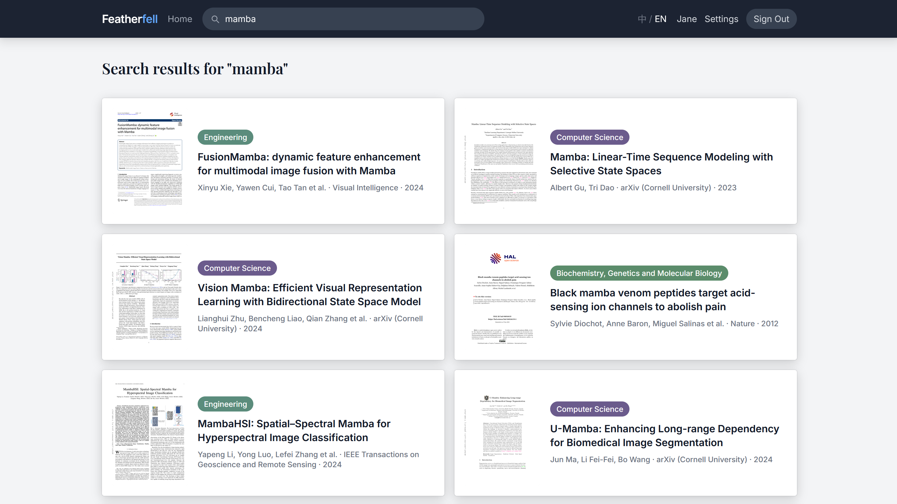
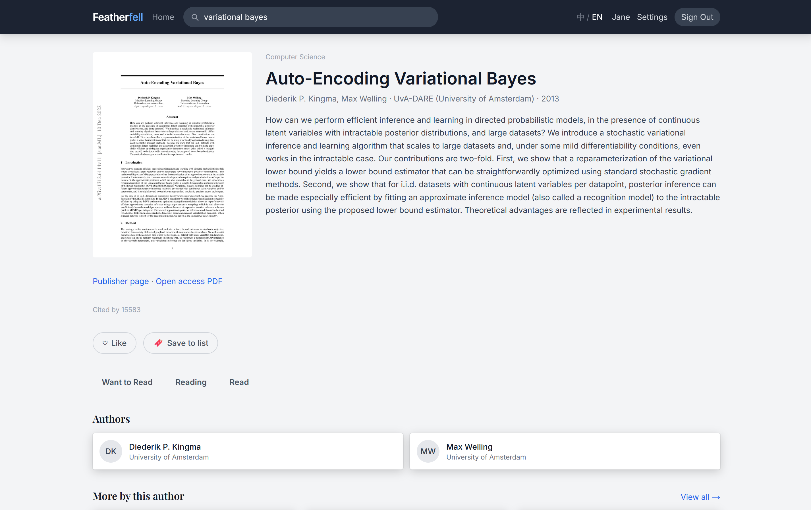
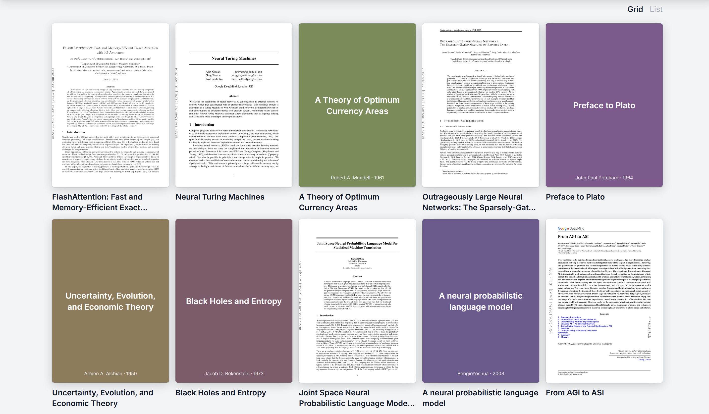
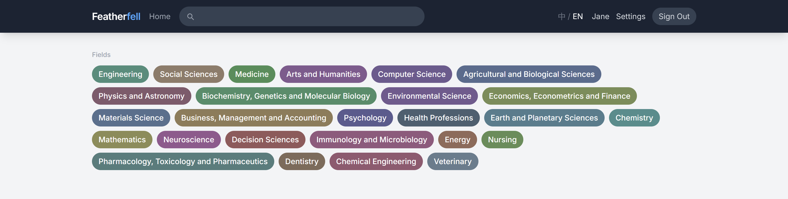
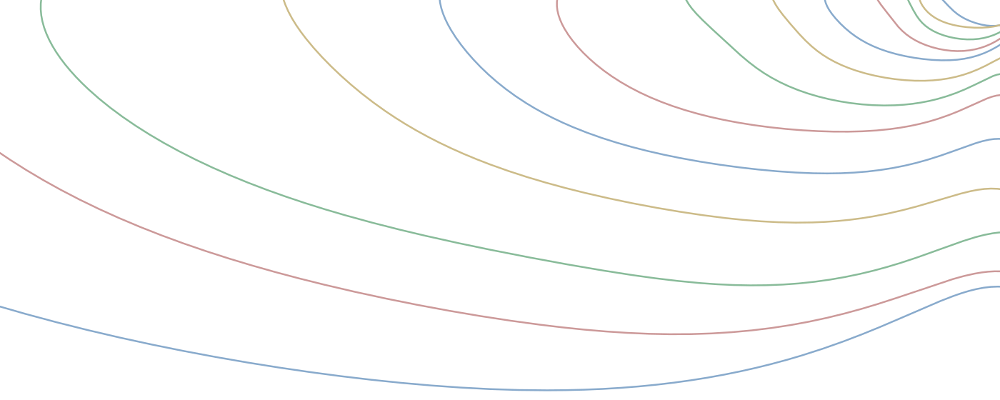

Abstract
Featherfell is a platform where researchers mark papers they encounter and read, indexing more than 240 million scholarly works across all academic disciplines through OpenAlex. A researcher searches for a paper by title or identifier, marks it as Want to Read, Reading, or Read, optionally adds a short note, and moves on. Over months the markings accumulate into a reading wall of paper covers, with the platform deliberately omitting ratings, reference management, and bulk import. The platform is available at https://featherfell.com.
Researchers encounter papers through classes, social media, citation lists, and conversations with colleagues, and regularly finish reading a paper without noting it anywhere. Reference managers like Zotero and Mendeley can track these papers, but they are organized around documents: importing a PDF, filing it into a folder, and maintaining the structure takes more effort than simply noting a paper down. Google Scholar’s Library lets researchers star papers, but the result is an unordered list with no temporal or disciplinary structure, and hundreds of starred items do not organize themselves into anything useful. We built Featherfell, a paper marking platform that covers all academic disciplines through OpenAlex [Priem et al., 2022]. A researcher searches for a paper, marks it, and moves on, with no files to import and no folders to maintain.
As markings accumulate over months, they form a record of which papers one researcher chose to pay attention to, in what order. Reading is an activity central to research that currently produces no record in scholarly infrastructure. Section 3 describes the properties of this accumulated record.

The search box accepts paper titles, DOIs, arXiv IDs, PMIDs, and PMC IDs. Search results appear as a card grid, with each card showing the paper’s cover (rendered from the first page of the PDF, or a synthesized cover when no PDF is available), title, authors, publication venue, year, and a discipline tag.

Featherfell indexes scholarly works through OpenAlex, covering more than 240 million works across all academic disciplines [Priem et al., 2022]. Cross-disciplinary coverage is deliberate: a researcher’s reading often spans multiple fields, and restricting the platform to a single discipline would erase that dimension. Papers without a DOI, common in humanities and social science journals, are indexed through their OpenAlex ID and remain searchable. OpenAlex was selected for its coverage of humanities and social sciences, which other scholarly indexes tend to underrepresent.
The detail page for a paper shows its abstract, a PDF preview, author list, citation count, publication source, and year. A researcher marks the paper as Want to Read, Reading, or Read. After marking a paper as read, the researcher can write a single short note, a personal reminder rather than a published review. Each paper allows one note at most, keeping the platform a place for marking rather than discussion.

Each marking takes a second, collecting a paper from any channel into one place. As markings accumulate over weeks and months, they fill a reading wall. Each card on the wall shows the first page of the paper’s PDF. The visual design takes cues from Letterboxd’s treatment of movie posters, making the wall something a researcher enjoys looking at. If the marked papers span several disciplines, the wall reflects that visually through different discipline color tags.

The platform provides browsing by discipline, using the field level of OpenAlex’s topic hierarchy, which organizes scholarly work into 26 fields. Field-level tags appear throughout the site rather than finer subfield tags because subfield classification is sometimes inaccurate (OpenAlex labels FlashAttention under Gaze Tracking, for instance), while the parent field (Computer Science) is almost always correct.

Clicking any author’s name opens a page listing that author’s works. Researchers can also create collections to group papers by theme outside the chronological reading wall.
No ratings. Featherfell does not ask researchers to rate papers. Marking a paper should take one second, without the cognitive overhead of choosing how many stars it deserves.
No reference management. Featherfell does not store PDFs, manage bibliographies, or generate citations. Keeping track of papers and managing a document library are different activities, and the second has excellent dedicated tools already.
No bulk import. There is no way to import hundreds of papers at once. A reading wall that grew over months of individual markings is a fundamentally different object from one filled in an afternoon.
When a researcher uses Featherfell over months, marking papers as they are encountered, the markings accumulate into a reading trace: a record of which papers one person chose to pay attention to, in the order they were marked.
Machine-generated text has entered scholarly submissions and peer review at growing scale [Naddaf, 2025, Agarwal et al., 2026, Emi, 2025]. As producing a passable paper becomes cheaper, metrics that evaluate researchers by counting output lose their ability to distinguish. Citations, h-index values, and review scores are all numerical and strategically optimizable.
A reading trace has different properties. It grows only through continued use, one paper at a time, and cannot be generated in bulk. The trace is bound to a specific person, and transplanting someone else’s reading history onto a different account would not represent actual choices. Because the platform makes marking enjoyable, researchers maintain their traces without institutional mandates or external incentives.

Reading is an activity central to research that currently produces no record in scholarly infrastructure. Featherfell provides a place where it does.
Several independent projects have recently built tools for tracking what researchers read, suggesting that the need is widely felt. Table 1 compares these platforms.
| Platform | What it records | Rating | Record bound to | Disciplinary scope |
|---|---|---|---|---|
| goodpapers [goo, 2026] | Reading status, short reviews | Half-star | Person | CS-focused |
| Paper Trails [pap, 2026] | Reading status, shelves | Star | Person | Any URL |
| AlphaXiv [alp, 2024] | Text comments on papers | No | Document | arXiv papers |
| Featherfell | Reading choices over months | No | Person | All disciplines |
Featherfell is the only platform listed that combines person-level records, no ratings, and cross-disciplinary coverage through a structured scholarly index.
Featherfell is designed to do one thing well: let researchers mark the papers they come across, with no management overhead. The platform is live at https://featherfell.com.